Chapter 6
Passed pawn
6.1 Introduction
What is a passed pawn? According to common opinion: a pawn that meets no enemy pawns on its way to the other side. Passed pawns play an important role in the endgame, but they can be a significant factor in the middlegame, too.
The Great Teacher Aron Nimzowitsch formulated it as follows, many years ago: a passed pawn has a ‘lust to expand’ (it wants to move forward), and therefore the defender must keep it ‘under lock and key’. In other words: a passed pawn must be blockaded.
In general, we can say that a passed pawn on a board full of pieces functions as a kind of buffer for the player who has the initiative. It is used under an ‘umbrella’ of tactical finesses to create as much chaos in the enemy ranks as possible. In this context it is not unthinkable that the passed pawn may be lost somewhere along the way, but if the attacker plays his cards right, his own pieces have been manoeuvred to promising positions in the meantime. In such cases the pawn is not only a mighty strategic weapon, it can also be used for many tactical motifs.
Another type of passed pawn occurs when most of the minor pieces have been exchanged. Then the ‘middlegame’ already displays endgame tendencies, but nevertheless it is useful to study these situations. In many cases the pawn is already a decisive factor if it has reached the sixth or seventh rank and there are only major pieces left on the board (see 6.3).
Summarizing, we can establish that there are two types of ‘passed pawn in the middlegame’, and we will discuss them separately.
6.2 The passed pawn as an attacking weapon
Certain opening variations lead to a pawn structure that already contains a potential passed pawn. In most cases, the strategy of the player who has this passed pawn is based on making use of its potential.
From the starting position we play the following moves:
1.d4 d5 2.c4 e6 3.♘c3 ♘f6 4.♘f3 c5 5.cxd5 ♘xd5 6.e4 ♘xc3 7.bxc3 cxd4 8.cxd4 ♗b4+ 9.♗d2 ♗xd2+ 10.♕xd2 0-0

In this position, which arises from the Semi-Tarrasch, White has a potential passed pawn. In some books this pawn formation (d4+e4 versus e6) is called ‘the small centre’. White’s play should be aimed at carrying through the pawn push d4-d5. This raises the question how White has to develop his pieces further and, especially, where he should place his rooks.
During several training sessions I have asked my chess students which squares are the best for White to put his rooks on in this position. Most of them answered that they should be put on c1 and d1. Grandmasters, however, opt for the squares d1 and e1.
Essentially, White wants to keep the major pieces on the board and prefers to exchange the minor pieces (see the examples further on in this chapter). If he places a rook on c1, later on Black will be able to exchange at least one pair of rooks with …♖c8, followed by …♖xc1.
For Black, on the other hand, it is useful to exchange the major pieces and keep the minor ones on the board, since he has the prospect of an endgame with the ‘outside passed pawn’ (he has a pawn majority on the queenside). And this advantage may be converted especially well in an endgame with minor pieces only.
That is why from the diagram position, White often chooses a set-up with moves like ♗c4, 0-0, ♖ad1, ♖fe1. All his pieces support the d4-d5 push, whereas Black’s pieces cannot easily be exchanged.
It is important to know that it is helpful for the player who has the passed pawn to have as many open files as possible in the neighbourhood of this pawn. This is not so surprising, as by moving the passed pawn forward he will create footholds for his own pieces. These footholds may, for instance, be used as a kind of springboard to jump in (i.e., inside the black defences). Sometimes this happens in a melee of tactical complications, and the passed pawn perishes like a valiant knight, who sacrifices his life for his king. This is nicely illustrated in the following fragment.

White has sacrificed an exchange in order to make his bishop pair operative. What strikes us in this position is that diagonals are more important than files. In short, the white bishops will have full play over the black rooks. The only thing that keeps Black upright is his knight, which is a tower of strength on e5.
Although the pawn on c5 is hanging, Black has not yet had time to eliminate it. Now Kasparov uses it as a springboard:
1.♖d6! ♖e8
The threat was 2.♖xf6+!, sweeping away the foundations that support the black knight.
2.♗xe5!
As said, the knight must be removed from the board. This is an opportune moment, since now 2…♕xe5 fails to 3.♖xf6+ ♔g7 4.♖g6+ ♔f8 5.♕xc4, and the white attack is virtually decisive. After 5…bxc5 6.♖xg4, the black king hasn’t a shred of protection left, and in the right circumstances White will be able to set up a deadly threat on the a2-g8 diagonal with ♗b3.
2…fxe5 3.♕xc4
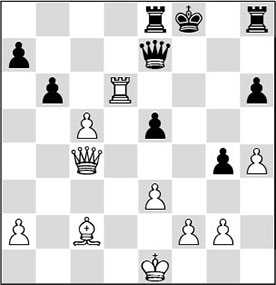
3…♕f7
It is impossible for Black to undertake anything sensible against White’s supremacy on the light squares. After, for example, 3…♖d8 4.♗b3! ♖xd6 5.cxd6 ♕d7 6.♕d3!, White’s passed pawn on d6, combined with Black’s exposed king, make Black’s position untenable. It is amusing that the c5-pawn, which appeared to be doomed, now suddenly plays the starring role!
Also after 3…bxc5 4.♗g6 ♖h7 (equally insufficient is 4…♖b8 5.♖e6 ♕d7 6.♖f6+, and White wins decisive material) 5.♕xc5, the plethora of threats will be Black’s undoing.
4.♕e4!
Kasparov plays in the spirit of the position. He could also have liquidated to a winning rook ending with 4.♕xf7+ ♔xf7 5.♗g6+ ♔e7 (5…♔g7 6.♗xe8 ♖xe8 7.cxb6 axb6 8.♖xb6 ♖a8 9.♖b2, winning) 6.♗xe8 ♖xe8 7.♖xh6 bxc5 8.♖c6. After the even stronger text move, the main threat is 5.♗b3+ followed by 6.♕f5+.
4…g3 5.fxg3
And Black had seen enough. After 5…bxc5 6.♗b3 ♕g7 7.♕f5+ it would indeed be curtains.
If there is a passed pawn on the board, Black’s defence is based on the blockade of that pawn. As we have touched on before, Nimzowitsch already used to write about the passed pawn’s ‘lust to expand’ and compared it to a ‘criminal’ that needs to be ‘kept under lock and key’.
Aron Nimzowitsch
The passed pawn as a ‘burglar’, or rather, as a ‘jailbreaker’, is shown in the following example, where tactical finesses play an important part. Who could demonstrate this better than our great teacher himself?
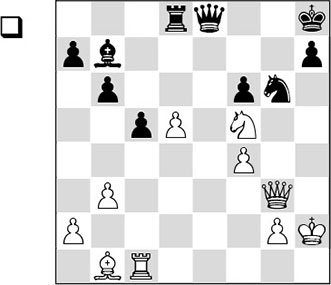
In the diagram position White has a passed pawn on d5, but it seems rather weak here. That’s why White first points his arrows at Black’s vulnerable kingside, in front of which the white pieces have already taken up menacing positions.
1.♖e1 ♕f8 2.d6!
For the moment White’s pieces are ideally posted, so now the floor is given to the passed pawn! This pawn fulfils an important function in creating a foothold (a springboard!) on e7, which two of White’s pieces can use to ‘jump in’.
2…♖d7
This weakens the back rank, which will create considerable problems for Black. It is important to give some thought to the following variation, where the passed pawn gets the last word: 2…♗c8 3.♘e7 (using the springboard!) 3…♕h6+ 4.♔g1 ♘xf4 5.♘xc8 ♖xc8 6.d7 ♖d8 7.♖e8+ and White promotes to a queen.
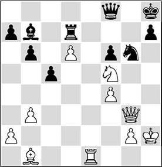
3.♕c3
A move that is hard to find. Nimzowitsch aims at Black’s Achilles’ heel: the pawn on f6. Now White threatens to win immediately by 4.♖e8! ♕xe8 5.♕xf6+ ♔g8 6.♘h6#.
Even more to the point was 3.♕h3!. The queen focuses on the other weak spot in Black’s position: h7. At the same time it keeps an eye on the unprotected rook on d7. A possible continuation is: 3…♕g8 (if 3…♗c6, then 4.♘e7!, whereas after 3…♗c8 the game is finished even more quickly by 4.♘e7! ♔g7 5.♘xc8 ♕xc8 6.♗xg6 ♔xg6 7.♕g4+ ♔f7 8.♖e7+. In this last variation, the beautiful cooperation of White’s pieces catches the eye, as well as the importance of the foothold on e7) 4.♘h6 ♕d8 5.♗xg6! and White wins.
3…♖xd6
Objectively speaking, this is the best continuation, but it leads Black into a hopeless endgame, which is not difficult to win for White with the exchange up. Critical was 3…♖f7, but then the pawn would have its say again: 4.d7! ♗c6 (4…♖xd7 5.♖e8 ♕xe8 6.♕xf6+ ♔g8 7.♘h6#) 5.♖e8, winning.
The best move appears to be 3…♔g8,
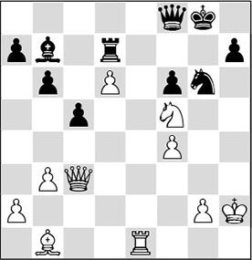
Analysis diagram
but then White brings a new piece into the game: 4.♗d3!. The bishop threatens to deal a heavy blow via the vulnerable c4-g8 diagonal, whereas after 4…♗d5 it will be deployed on another attractive diagonal: 5.♗b5 ♖d8 (5…♖xd6 will not offer Black any solace either after 6.♖e8) 6.d7, and the threat of 7.♖e8 becomes impossible to parry. Once again, the passed pawn plays the starring role.
4.♘xd6
After the text the win is a matter of technique, which is handled expertly by Nimzowitsch. As this phase lies outside the scope of this chapter, I give the rest of the game with light comments only.
4…♕xd6 5.♗xg6 hxg6 6.♖e8+
6.♕e3! would have been a little smarter.
6…♔g7 7.♕g3 ♗c6 8.♖e3 ♗d7 9.f5!
Thus White forces the exchange of queens, after which the rook can demonstrate its superiority over the bishop.
9…♕xg3+ 10.♔xg3 ♗xf5 11.♖e7+ ♔h6 12.♖xa7 ♗b1 13.♖a6 b5 14.a4 bxa4 15.bxa4 ♔g5 16.♖b6 ♗e4 17.a5 f5 18.a6 c4 19.a7 c3 20.♖b3 f4+ 21.♔f2 c2 22.♖c3
1-0
In the following example, the passed pawn is also brought into action as a tactical weapon.

The white position makes an overwhelming impression. Most of his pieces are ready for an attack on Black’s somewhat exposed king position. What is less conspicuous is that White’s passed pawn on d5 just might be going to play first violin…
1…♗a6
Black must do something. With the text he wants to win an exchange.
2.♕h5 g6
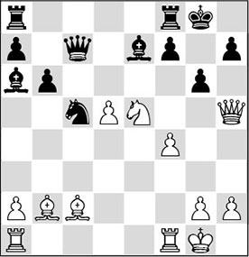
3.♘g4!
The best continuation. There was also an attractive double piece sacrifice, but, as so often, the first piece would be taken and the second wouldn’t. A few examples:
A) After 3.♘xg6? fxg6 4.♗xg6 ♗f6 the attack will be stopped;
B) Also after 3.♘xf7?! ♖xf7 (not 3…♔xf7?, since after 4.♕xh7+ ♔e8 5.♕xg6+ ♔d8 6.♗e5 ♕d7 7.d6 White would win easily) 4.♗xg6 ♗f6 5.♗xf7+ ♕xf7 6.♕g4+ ♔f8 7.♗xf6 ♕xf6, Black appears to have the upper hand;
C) After 3.♗xg6? fxg6 4.♘xg6 ♗f6 White’s attacking play is a total failure because too many of his pieces are hanging.
3…f6 4.♗xg6 ♗d8
Black finds a way to create complications. After 4…♗d6, 5.♗xf6! wouldn’t have been so hard to find.
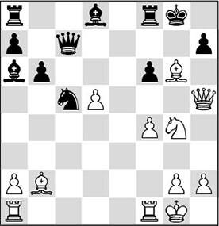
Now White is forced to conjure up a relatively hard-to-find attacking concept in order to justify his previous play.
In the diagram position White has two ways to gain a decisive advantage.
5.♘h6+
It seems logical to involve the passed pawn into the attack right away. The other way to put his passed pawn into action was 5.d6 ♕g7 (things would get worse for Black after 5…♕b7 6.♘h6+ ♔h8 7.♘f7+, when he could throw in the towel as well) 6.♕d5+ ♔h8 7.♕xa8 ♗xf1 8.♖xf1 hxg6, and White is winning.
5…♔h8 6.♘f5
The intention of White’s knight manoeuvre is not only to cover the g7-square, so as not to allow Black to involve his queen into the defence, but mainly to create a foothold on e7 with d5-d6 and use it as a springboard for the knight. Next, the threat of ♘f5-e7 will interrupt the black queen’s protection of the h7-point, thereby creating a mating net that cannot be unravelled.
6…♗xf1 7.d6 ♕b7 8.♖xf1
Stay alert at all times! Black threatened to give mate in one.
8…♖g8
There was no remedy left to the following elegant interference motif, which is well-known in the world of endgame studies.
9.♘e7!
Actually this is a double interference: the knight not only interrupts the seventh rank, but also a second line of protection: the one by the bishop of the f6-point.
9…♖xg6
After 9…♖g7, 10.♗xf6 would also decide.
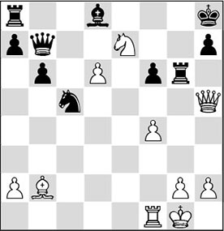
10.♗xf6+!
1-0
White finishes off elegantly.
The conclusion would have been 10…♖xf6 11.♕e8+ ♔g7 12.♕g8+ ♔h6 13.♕g5#
6.3 The passed pawn with major pieces
A passed pawn prefers to have free rein. In the previous section we have seen that a knight can fulfil the function of a blockading piece perfectly. The following position provides us with a good look at the playing scheme associated with this theme.
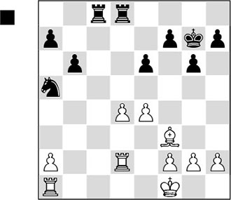
White has a potential passed pawn on d4 and Black gives him a helping hand, so that he can even turn it into a protected passed pawn:
1…e5 2.d5
Here the attentive reader will scratch his head in wonder. Why willingly give your opponent a protected passed pawn? The answer is simple: by the manoeuvre …♘a5-c4-d6, the pawn will be put behind bars, and then Black will have achieved a number of things. He has fixed the centre pawns on the colour of the bishop (thereby downgrading the latter to a ‘bad bishop’).
On the blockading square d6 (or, as Nimzowitsch called it, the ‘stopping square’,) the knight fulfils a useful function. It can look ‘beyond’ the passed pawn, as it were, and apply pressure to the e4-pawn. As Black also has control of the c-file as well as a majority on the queenside, we can safely say that White has substantial strategic problems here.
2…♘c4 3.♖e2 ♘d6 4.♖b1 ♖c4 5.g3 ♖dc8 6.♗g2 ♖c1+ 7.♖xc1 ♖xc1+ 8.♖e1 ♖xe1+?!
Perhaps Black should have preferred to keep the rooks on the board with 8…♖c4. This would have given him more practical chances to build on his indisputable advantages. In the game, the protected passed pawn makes the winning process difficult for Black.
9.♔xe1
Even in this simplified position Black has realistic winning chances. The ‘immobile’ knight keeps everything under control and cannot be driven away. Moreover, it helps Black to carry out his plans.
9…f5 10.f3
To his detriment White must keep the position closed, even though this does not exactly make his bishop any better. After 10.exf5 gxf5, his d-pawn will become isolated and will be lost in the long run.
10…fxe4 11.fxe4 b5
A second cornerstone of Black’s winning plan: the pawn majority on the queenside.
12.♔d2 a5 13.♔d3
Please note that the white king cannot penetrate anywhere on the queenside.
13…♔f6 14.♗f3 ♔e7 15.h4 h6 16.♗d1 ♔d8 17.a4
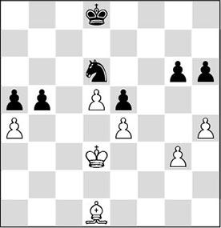
White puts even more pawns on the wrong colour, but this is indeed his best attempt to scrape a draw. If Black wants to win, he will have to create a passage for his king somewhere.
17…bxa4?!
This jeopardizes the win. Better was the thematic 17…b4, after which Black’s winning plan looks as follows: king to b6, and then play the knight round to c5, where it keeps the pawns on a4 and e4 covered, and Black can work with the threat of …b4-b3 as well.
18.♗xa4 ♔c7 19.♗c2 ♔b6 20.♔c3 ♔b5 21.♔b3 ♔c5 22.♔a4 ♘c4
It’s been quite a while since this knight made a move.
23.♗b3?!
White collapses under the continuous pressure. He should have played 23.♗b1, in order to meet 23…♘d2 with 24.♗d3, after which the f1-square is covered and the planned …♘f1 is out of the question. It is doubtful whether Black could have won in that case.
23…♘d2 24.♗c2 ♘f1
The knight now goes on the prowl.
25.♔xa5
After 25.g4, White would also have had to part with the g-pawn: 25…♘e3.
25…♘xg3 26.♔a4 ♘h5?!
A little smarter would have been 26…♘f1 27.♔b3 ♘d2+ 28.♔c3 ♘f3, and Black wins a pawn.
27.♔b3
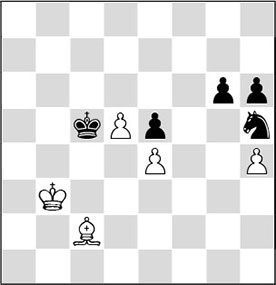
27…♔d4
Now the game turns into a race that ends favourably for Black. The ‘criminal’ has to be released, and that means danger. But Black has a passed pawn himself, and his is a lot harder to stop.
28.♔b4?
It was difficult to see, but the only chance of a draw was 28.♔b2, trying to bring the king within reach of the black g-pawn. A possible continuation would be: 28…g5 29.hxg5 hxg5 30.♔c1 ♔e3 31.♗d1 ♘f6 (31…♘f4 32.♗g4 ♔xe4 33.d6 ♘d3+ 34.♔d2 ♘b4 35.♗c8) 32.d6, and White achieves a draw by the skin of his teeth.
28…♘f6 29.d6 g5
The bishop is still bad, since it is hampered in its movements by the pawn on e4.
30.hxg5 hxg5 31.♔b5 g4 32.♗d1 g3 33.♗f3 ♔e3 34.♗h1 ♔f2
Black has calculated excellently: he will arrive just in time.
35.♔c6 g2 36.♗xg2 ♔xg2 37.d7 ♘xd7 38.♔xd7 ♔f3
0-1
In the above example we have seen that the knight was superior to the bishop. This was caused mainly by the closed character of the position, which made the blockading piece more powerful.
For Black it was important to keep closed as many lines as possible around the pawn, so as to make the blockade more effective.
Now let us briefly return to the first diagram in this chapter.
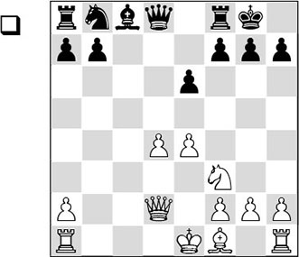
White can create a passed pawn in the centre. As we now know, it is important for White to possess open files in the neighbourhood of the passed pawn, so as to be able to take better advantage of the footholds that may be created.
In this type of position Black also has an important trump card: his majority on the queenside. His play must be aimed at pushing this majority forward with …a6 and …b5, which enables him to secure the important square c4 for his pieces.
Additionally, we can observe that the exchange of minor pieces is helpful for White in bringing about an endgame with major pieces. For Black, the opposite holds: he will prefer to keep the minor pieces on and exchange the major ones. This may also explain why White later plays his queen’s rook to d1 instead of c1. If he opted for the latter, then Black’s task would be made easier after …b6, …♗b7, …♘c6, …♖c8 and …♘a5, because then he could remove the rook from the board with …♖xc1, followed by …♕a8 and …♖c8.
The author himself has had the pleasure of gathering experience with this type of position, in a game against the strong chess computer program called Zugzwang.
There is a story connected to this. In the early 1990s in The Hague, an annual confrontation between man and computer was organized, which was sponsored by the Dutch insurance company Aegon. In a splendid ambiance, strong grandmasters, masters and amateurs pitted their strength against the strongest chess computers, but also against those of amateur programmers. Before the game in question, I was told that I would be playing a horrible calculating monster, with 1024 parallel-connected processors. The young men facing me, Rainer Feldmann and Peter Mysliwietz, were Ph.D. students from the Paderborn University in Germany.
The difference with a normal chess game is that when you play a computer, you will often engage in some small-talk with the people sitting opposite. They told me that for their research project, they were trying to make these processors communicate with each other in an effective way. For fear of walking into a trap, I tried to keep the game simple, and to steer slowly towards an endgame. I received some help from the calculating machine.
TD 2.9 (D41)
1.d4 d5 2.♘f3 ♘f6 3.c4 e6 4.♘c3 c5 5.cxd5 ♘xd5 6.e4 ♘xc3 7.bxc3 cxd4 8.cxd4 ♗b4+ 9.♗d2 ♗xd2+ 10.♕xd2 0-0 11.♗c4 ♘c6 12.0-0 b6 13.♖fe1 ♗b7 14.♖ad1 ♖c8 15.♗b3 ♘a5 16.♘e5 ♕d6 17.h4 ♖fd8 18.h5
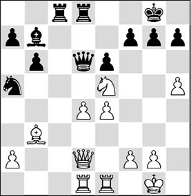
18…♘xb3
It is doubtful whether Black should have gone for this exchange.
19.axb3 h6 20.♖e3 ♕c7 21.♖g3
Probably, 21.♕e2 was slightly better, in order to prevent the queen exchange.
21…f6 22.♘g4 ♕c2 23.♘xf6+ ♔h8 24.♕xc2 ♖xc2 25.♘g4 ♗xe4
At first sight Black has no problems here.
26.♘e5 ♖c7?!
Here, 26…♔g8, to bring the king to the centre, was more logical.
27.b4 ♖d5 28.♖e3 ♗f5 29.g4 ♗c2 30.♖d2 ♖b5
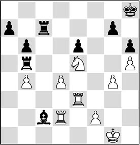
31.♘g6+! ♗xg6
It sounds strange, but because of this exchange Black now ends up in a virtually hopeless endgame. The alternative 31…♔g8 does not produce a rosy picture either: 32.♖xe6 ♔f7 33.♖de2, and now 33…♖g5 is the only move to continue the struggle. Here, 33…♖xb4 fails miserably on account of 34.♘h8+! ♔g8 35.♖xc2 ♖xc2 36.♖e8+ ♔h7 37.♘g6, and mate is inevitable!
32.hxg6
We can categorize this under the heading ‘horizon effects’ with the computers of those times.
The fact that the black king is now caught in the corner, combined with the soon-to-be-passed d-pawn, makes this position strategically winning for White, but a computer didn’t recognize this as such.
32…♖xb4 33.♖xe6 ♖c8
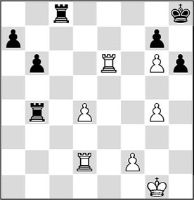
I remember that my conversation partners were quite optimistic during the game. Black’s two connected passed pawns on the queenside apparently made the apparatus blink merrily. In actual fact this position is already almost losing for Black. The engines of 2016 do a much better job evaluating this position.
34.f3 ♖d8 35.d5 ♖f4 36.♔g2 ♖ff8
Also after 36…♖f6 37.♖a2 a5 38.♖b2 ♖df8 39.♖exb6 ♖xf3 40.d6, White maintains excellent winning chances.
37.d6!
Grandmaster Hodgson, during the analysis of a game, once used the name ‘push pawn’ when he was talking about a passed pawn.
37…♔g8 38.d7
This pawn on the seventh rank is invaluable compared to Black’s majority on the queenside. On d7 the pawn has a paralysing effect on the black pieces. Another, not unimportant factor in this position is that the black king cannot be brought into play. And that has everything to do with the pawn on g6.
38…b5
This ‘push pawn’ is of a different nature. The black pawns lack assistance, and so their march is doomed to fail.
39.♖e7
At this point, modern engines also ‘see’ that the position is lost for Black. White picks up Black’s passed pawns at his leisure, before announcing the final act.
39…♖a8 40.♖d5 b4 41.♖b5 b3
Neither does 41…a5 help, in view of 42.♖be5! b3 43.♖e8 b2 44.♖xa8, and White wins. Or 44…b1♕ 45.♖xf8+ ♔xf8 46.d8♖#.
42.♖xb3 a5 43.♖be3 ♖ad8 44.♖3e5 a4 45.♖a5 ♖b8 46.♖xa4 ♖fd8 47.♖f4
Here the two Ph.Ds pulled the plug. The ‘human eye’ had caught them by surprise in this game.
At the beginning of this section, we discussed the role of the knight as a blockading piece. It should not remain unnoticed that a bishop can also sometimes fulfil a useful role as a blockading piece. There is an amusing anecdote from which we can learn something useful here.
In the popular game of bughouse chess (in which two players face two other players, and you pass the pieces you have captured on to your partner, who may put one on his board by way of a move), in the regular variant you are allowed to put a pawn on the seventh rank. Consequently, it regularly happens that suddenly two or three such giants appear on the board, who quickly promote to queens.
It seemed that nothing could be done about this, until my partner had found the solution. ‘I need bishops’, he shouted. ‘Only bishops can stop these monsters!’ And he was right. As soon as a pawn was put on the seventh rank, he immediately put a bishop in front of it as a blockading piece, after which it was impossible to create two connected passed pawns. This teaches us that a bishop can be an ideal piece to keep two connected passed pawns under control. We have remarked earlier that the player who has a passed pawn generally profits from the exchange of minor pieces, since then they cannot fulfil their role of blockaders anymore. If major pieces have to take over this task, this mostly results in a serious loss of activity. In such cases a lot depends on how far the pawn has advanced.
As a rule, an endgame with major pieces is won for the side with the passed pawn if the latter has reached the sixth or seventh rank. An instructive example is the following game:
TD 2.9 (D41)
1.d4 ♘f6 2.♘f3 e6 3.c4 d5 4.♘c3 c5 5.cxd5 ♘xd5 6.e4 ♘xc3 7.bxc3 cxd4 8.cxd4 ♗b4+ 9.♗d2 ♗xd2+ 10.♕xd2 0-0 11.♗c4 ♘c6 12.0-0 b6 13.♖fe1 ♗b7 14.♖ad1 ♘e7
At the time of this match, this was a new idea. The intention is to play the knight via f5 to the blockading square d6, if White sets his passed pawn in motion.
15.d5
The thematic push.
15…exd5 16.exd5 ♘f5 17.♘e5 ♘d6
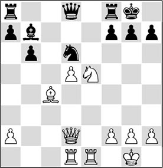
It looks as if Black’s strategy is proved right. The pawn has been ‘put behind bars’ and Black can develop play along the c-file, in combination with his majority on the queenside. The following move must have come like a bolt from the blue.
18.♘c6!
White makes use of the foothold on c6 to penetrate deep into the black position with his pieces. This move appears to lose a piece, but good calculation shows that it won’t come to that.
18…♗xc6?
Kortchnoi collapses immediately. As we stated above, in this situation Black must keep the minor pieces on the board in all circumstances. This erroneous exchange leads to an endgame with major pieces where White will have a pawn on the sixth rank. After 18…♕f6, and now, for instance, 19.♗d3 ♖fe8, Black would only be slightly inferior.
No solace was offered by 18…♘xc4 19.♘xd8 ♘xd2 20.♘xb7 ♘c4 21.d6, with an almost decisive advantage for White.
19.dxc6 ♘xc4 20.♕f4
The point of the combination. In this way, White regains his piece.
20…♘d6 21.♖xd6 ♕c7
This is the position that White was aiming for when he decided on his 18th move. We can conclude that the pawn on the sixth rank makes the position winning for White in a higher sense. The conversion requires almost perfect technique, but that was something Petrosian was famous for!
22.g3
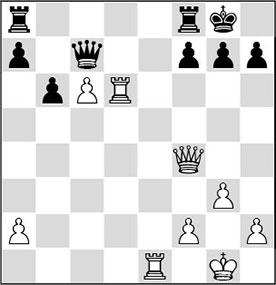
Exactly. The queen on f4 is protected, and back-rank mates are ruled out. It is important for White that the black rooks cannot be easily activated, and with this move Petrosian anticipates every eventuality.
22…h6
Kortchnoi realizes that he is doomed to passivity. To 22…♖fe8 his opponent has a tailor-made reply: 23.♖xe8+ ♖xe8 24.♖e6! (a magnificent move, with which White liquidates to a winning queen ending) 24…♕c8 25.♖xe8+ ♕xe8 26.c7, and the pawn on the seventh rank decides the battle.
Also after the alternative 22…♖ad8, White comes out on top: 23.♖xd8 ♕xd8 24.c7, and the pawn has reached the seventh rank and is protected by the queen, making promotion inevitable.
23.♕e5
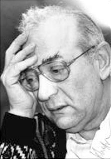
Viktor Kortchnoi
Ruling out all rook moves to central files. There was also nothing wrong with 23.♕d4 ♖fe8 24.♖xe8+ ♖xe8 25.♔f1! (better not allow the rook behind the white pawn: after 25.♕d5 ♖e1+ 26.♔g2 ♖c1, Black would be back in the game) 25…♖c8 26.♕d5, and the threat of 27.♖d7 decides the game in White’s favour.
23…♖ac8
Or 23…♖ad8 24.♖xd8 ♕xd8 25.c7. If the pawn can be moved one rank further, you should (almost) always do this without hesitation.
24.♕d5 ♔h7
It is clear that Black has no useful moves left. Of course, Petrosian had also prepared an answer to 24…♖fe8: 25.♖xe8+ ♖xe8 26.♖d7, and either Black collapses due to the weakness of the f7-point, or he can no longer prevent the promotion of the pawn after 26…♕e5 27.♕xe5 ♖xe5 28.c7.
25.♖e4 ♔g8 26.♔g2 a6 27.h4
After a few preparations, White moves on to the second stage of his plan. His centralized position dooms Black to passivity. Petrosian wants to transform his activity into an attack on the black king, and to accomplish this, he pushes his kingside pawns forward, in order to disrupt the black pawn structure on that flank.
27…b5 28.g4!
This way White will later be able to take advantage of the target on h6.
28…♔h7
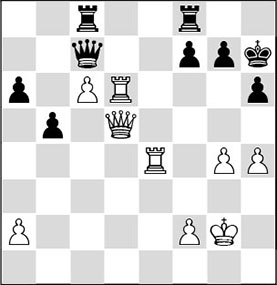
29.♖e2!
A very deep move, and one that computers have trouble finding. White would like to attack the h6-point with g4-g5. In principle, Black will want to keep the lines in the vicinity of his king closed, and so he will have to opt for …h6-h5. In that case White wants to take aim at the h5-pawn with ♕d5-f3, forcing Kortchnoi to weaken his kingside further with …g7-g6.
29…♔h8
It goes without saying that White had very accurately calculated that Black’s break-out 29…♖ce8 30.♖xe8 ♖xe8 31.♖d7 loses. After 31…♕f4 (a nice try, since the pawn on g4 is weak as well and White has also weakened his own king position), White can simplify with 32.♕f5+ into a rook endgame where the passed pawn will deal the death blow, for example: 32…♕xf5 33.gxf5 ♖c8 34.c7 a5 (Black can never retreat his king to the back rank on account of ♖d8+; 34…f6 35.h5 b4 36.♔f3, and with a king march to the queenside White puts Black’s potential passed pawn out of action) 35.♖xf7 (this is the most convincing win, which still had to be sharply calculated. In several lines White wins thanks to his absolute possession of the seventh rank. The alternative was to walk on with his own king in order to keep the black passed pawn under control: 35.♔f3 b4 36.♔e2 a4 37.♔d3 b3 38.axb3 a3 39.♔c2) 35…b4 36.h5! (premature would be 36.f6? due to 36…♔g6) 36…a4 37.f6 b3 38.♖xg7+ ♔h8 39.axb3 axb3 40.♖d7 b2 41.♖d8+ ♔h7 42.♖xc8 b1♕ 43.♖h8+ ♔xh8 44.c8♕+, and Black will be mated.
30.g5 h5 31.♖d2
Finally White can give up the e-file, as he wants to be able to play ♕f3.
31…♖fe8 32.♕f3 g6 33.♖2d5
It is vital to always stay alert. Here, 33.♖d7?? would be slightly premature in view of 33…♕xc6, pinning the white queen, so that the planned 34.♕xf7 would not be allowed by the arbiter! After the text, however, this is a threat.
33…♖f8
Black’s possession of the e-file has been a short-lived joy. But there were hardly any alternatives.
34.♖f6 ♕e7 35.♖d7 ♕e8
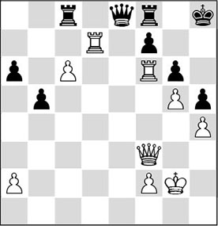
The diagram aptly illustrates the triumph of White’s strategy. The pawn on c6 ties the black pieces hand and foot to the back rank, and the centralized white pieces have succeeded in seriously weakening the black kingside. Now the time has come to reap the harvest.
36.♖xg6!
After 36…fxg6, 37.♕c3+ is deadly.
36…♕e5
Due to the tense atmosphere in this match (the relations between Petrosian and Kortchnoi were not exactly friendly), Kortchnoi did not care to resign all too soon.
37.♕xh5#
1-0
Playing through this tour de force, the reader will have noticed the technical character of the game. Indeed, it is important in positions with only major pieces to know how various liquidations to other endgames must be evaluated. For that purpose, some basic knowledge of rook endgames is indispensable. The following game is quite instrumental in getting the reader a little better acquainted with these endgames.
White has a central passed pawn, which he quickly manages to escort to the sixth rank. A little later he succeeds in exchanging the minor pieces, liquidating into a rook ending, where he even gives a pawn in order to activate his king. After that, the fact that his rook is behind the pawn decides the game.
QI 14.18 (E12)
1.d4 ♘f6 2.c4 e6 3.♘f3 b6 4.♘c3 ♗b7 5.a3 d5 6.cxd5 ♘xd5 7.♕c2 ♗e7 8.e4 ♘xc3 9.bxc3 0-0 10.♗d3 c5 11.0-0 ♕c8 12.♕e2 cxd4 13.cxd4 ♗a6 14.♗b2 ♗xd3 15.♕xd3 ♕a6 16.♕d2 ♘d7

Again, White has a pawn majority in the centre, which he immediately sets in motion.
17.d5! exd5 18.exd5 ♗f6
From the previous examples we have learned that, in principle, Black should keep the minor pieces on the board. But in this case he cannot do without eliminating the dangerous white bishop on b2.
19.d6!
Although it seems that the pawn will be weak on this square, Gelfand pushes it forward as quickly as possible. The further this pawn gets, the better it will be for White later on. The justification of this push is that White can keep protecting the pawn with his major pieces, making the pawn a real bone in Black’s throat.
19…♗xb2 20.♕xb2 b5
Black also sets his majority in motion, but it will take him an entire game before he can create a passed pawn.
21.♖ad1 ♖fe8 22.♖d5 ♖ab8 23.♖fd1 ♕c6 24.h4!
White rules out any possible ‘back rank mates’, and is also working on the weakening of the enemy king’s position. As we have seen before, the presence of his passed pawn combines well with an attack against the opposing monarch.
24…a6 25.h5
25.♖g5 was another good idea.
25…h6

26.♘e5!
As soon as you know the principle, it will not be hard for you to find this move. The minor pieces are removed from the board, and as a result Black is doomed to complete passivity.
26…♘xe5 27.♖xe5 ♕d7 28.♖de1 ♖e6!
Black defends as tenaciously as possible. After 28…♖xe5 29.♕xe5, White would sail in via e7 with great force.
29.♖xe6 fxe6 30.♕e5
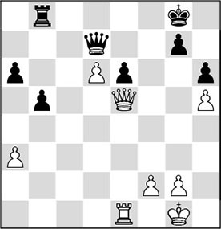
30…♖d8
30…b4! was Black’s primary chance of salvation: 31.axb4 ♖xb4, and White’s advantage after 32.♕xe6+ ♕xe6 33.♖xe6 ♖d4 is too small to really go on playing for a win.
White can punish 30…♖e8? (too passive!) with 31.♖c1!. In fact, it is plain and simple: the lethal threat is ♖c1-c7, and after 31…♖c8 32.♖c7! ♖xc7 33.dxc7, in the ensuing queen ending the pawn on the seventh rank will decide. For example: 33…♔f7 (33…♕c6 does not help either in view of 34.f4 a5 35.♔h2 b4 36.axb4 axb4 37.f5 exf5 38.♕e7, and White has edged his way through to the back rank)
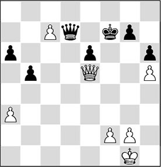
Analysis diagram
and now the winning sequence is instructive: 34.♕c3! (in order to prevent counterplay with …a6-a5) 34…♕c8 35.♔h2, and Black is helpless against the march of the white king.
31.♖d1
Supporting the passed pawn. 31.♕xe6 ♕xe6 32.♖xe6 a5 leads nowhere.
31…a5 32.♖d3?!
More in keeping with the spirit of the position is 32.♕c3!, attacking a5 and conquering the c-file.
32…♖c8 33.♔h2
Well-spotted: the white king will play an important part in this endgame!
33…♖f8 34.♕c3!?
The pawn on d6 is so strong that White can even give up a pawn in order to exchange queens and play for a win.
Here, 34.♕c5 was an excellent alternative.
34…♖xf2 35.♕c7
Not 35.♕xa5 on account of 35…♕c6!, and the tables are turned.
35…♖f7 36.♕xd7 ♖xd7 37.♔g3
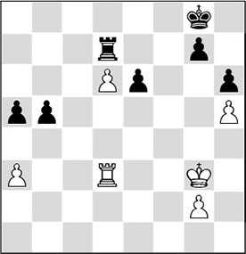
As the white rook is placed behind the passed pawn, the black rook is doomed to passivity. White tries to bring his king to the beautiful square e5.
37…♔f7?!
Black misses a chance to keep out the white king with 37…e5: 38.♔f3 ♔f7 39.♔e4 ♔e6, and the game would have ended in a draw.
38.♔f4 ♔e8
38…♔f6 runs into 39.♔e4 e5 40.♔d5, and the white king intervenes decisively.
39.♔e5
It’s hard to believe, but White is still playing for a win! Despite his minus pawn, the position offers him excellent prospects, mainly based, of course, on his strong d-pawn. It is essential that he has placed his rook behind the passed pawn.
39…♖f7
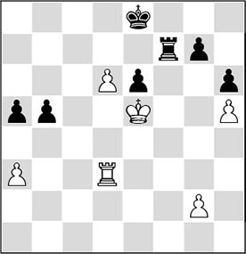
Following the correct strategy. His king must be placed in front of the pawn, after which he can activate his rook.
40.♖c3!
Very accurately played. After 40.♔xe6 ♖f6+ 41.♔e5 ♔d7, Black would be saved.
40…♔d8
Clearly, 40…♔d7 is not possible on account of 41.♖c7+ ♔e8 42.♔xe6.
41.♔xe6 b4
Black tries to make use of his own passed pawn in order to counterbalance White’s. However, the difference between the two is that White’s is supported by its king, and its black colleague is not. Moreover, the black king is stuck on the back rank, which will soon lead to mating patterns.
42.axb4 axb4 43.♖g3!?
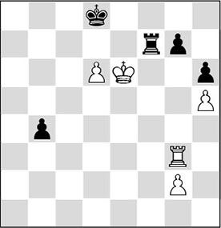
43…♖b7?
His only chance to hold lay in stirring up some activity by 43…♖f6+ 44.♔e5 ♖f2, as indicated by Gelfand and Kapengut. After the text move, Black soon ends up in a kind of zugzwang position.
44.♖g4!!
Brilliantly played! The black rook is tied to the b7-square (to protect the pawns on b4 and g7), whilst his king cannot escape from the back rank either.
44…♔e8
On 44…b3 White has prepared 45.♖a4! ♖b8 46.♖f4!, after which his pawn gets to the other side first, for example: 46…♔c8 47.♖f8+ ♔b7 48.♖xb8+ ♔xb8 49.d7 ♔c7 50.♔e7.
45.♖c4 ♖b8
After 45…♔d8, the winning line is interesting. Gurevich gives 46.g4 (also possible is 46.♖c5, so as to enable the rook to do its job via the a-file) 46…b3 47.♖a4 ♖b8 48.♖f4 ♔e8 49.d7+, after which Black can again resign. Now the rook invades on the seventh rank.
46.♖c7 b3 47.♖xg7 ♔f8 48.♖f7+ ♔g8 49.d7
It is instructive to see that the white pawn carries much more weight than its black counterpart. Now that the black king has been driven away from the zone around the promotion square of White’s passed pawn, White hardly has to worry about the breakthrough of the little black rascal.
49…b2 50.♖f1 ♔g7
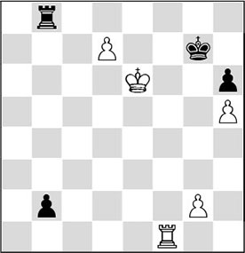
51.♖b1!
Accuracy is required until the very end. Black had set a nice trap: 51.♔e7?? b1♕ 52.♖xb1 ♖xb1 53.d8♕ ♖e1+, and White would have had to return the queen.
51…♖b6+ 52.♔e7 ♖b7 53.♔e8
1-0
A very admirable technical feat by the Israel-based Belorussian.
Lest we forget that a passed pawn in the middlegame often brings on certain tactical motifs, we will have a look at the following fragment. Tomashevsky, with white, makes optimal use of the tactics present in the position in order to escort his pawn to the other side.
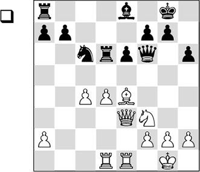
In the diagram position, White has so-called ‘hanging pawns’. The amount of minor and major pieces on the board mostly determines who is better in such cases. In general we can claim that the side with the hanging pawns depends on his attacking chances, and therefore prefers to keep as many pieces on the board as possible. In the diagram position, two minor pieces have been exchanged on both sides, and so it looks as if the black player is in reasonable shape. But now, other factors start playing a role!
18.d5!? exd5
The alternative 18…♘e7 gives White an advantageous position after 19.dxe6 ♖xe6 (19…♖xd1 20.exf7+, with a huge advantage for White) 20.♘d4, in view of, for instance, 20…♖b6 21.c5 ♖b2 22.♗c2! ♘g6 23.♕a3, and White wins material. Also after 18…♘a5, White obtains an advantage with a motif similar to the one in the game.
19.cxd5 ♘e7 20.♘e5!
White’s piece play is excellent, whereas the pieces in Black’s camp are somewhat unfortunately placed. The main threat is 21.♘c4.
20…♗b5?
It is understandable that Black wants to parry the threat, but he would have done better to get his last piece into the game: 20…♖ad8! 21.♘c4 ♖a6 22.d6 b5!?, and nothing is decided yet.
21.♕c5 ♖b6
The rook has to give up the blockade of the passed pawn. On 21…a6, White would strike with 22.♘g4 ♕f4 23.g3 b6 24.♕b4, and Black would have to give a considerable amount of material.
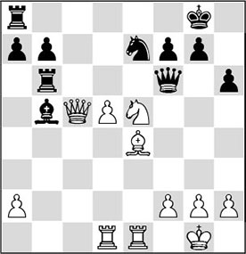
22.d6
Of course, White immediately sets his passed pawn in motion. The closer this pawn is to the back rank, the more trouble it will make for Black’s defence.
22…♘g6 23.♗xg6
Simplest: White exchanges minor pieces (i.e., potential blockaders) and pushes the pawn further. Curiously, he could have forced a win with 23.♘xf7!? as well. In the main line it is again the passed pawn that brings him the win: 23…♔xf7 24.♗d5+ ♔f8 25.d7+ ♘e7 26.♗c4!.
23…fxg6 24.d7
Also here, the passed pawn decides the game in White’s favour.
24…♖d8 25.a4
With this pretty tactical motif, White drives the bishop away from b5. The thought behind this is that this bishop indirectly covers the e8-square, which is exactly the square that White wants to use.
25…♗a6
The alternatives also lose: 25…♗xa4 26.♕c4+, and White wins; or 25…♗c6 26.♘xc6 ♖xc6 27.♖e8+ ♔h7 28.♕d5.
With a pawn on the seventh rank, it is no coincidence that the position contains a combination. And indeed, Tomashevsky manages to unearth it.
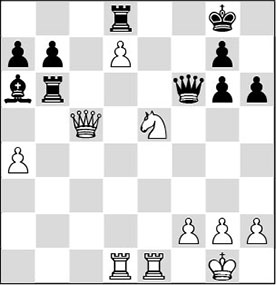
26.♘xg6!
With this powerful move White not only wins a pawn, but he also clears the way for his rook on e1 (to e8!). By the way, White could also have won with 26.♕c7 ♔h7 27.♘f7.
26…♔h7
Black wants to evade the checks with his king. After 26…♕xg6 27.♕c8 (27.♕e7 is not a bad move either!) 27…♕f6, 28.♖e8+ decides.
27.♘e5
White saves the knight and prepares for the final chord.
With 27.♘f8+!?, White could have unexpectedly given a devastating check! After 27…♖xf8 28.♖e8 ♖d6 29.♕c2+ ♔h8 (29…♗d3 30.♖xd3+–) 30.♖xd6 ♕xd6 31.♖xf8+ ♕xf8 32.♕c8, again, the passed d-pawn would have decided the issue.
27…♖e6 28.♕d5 ♖e7 29.h3
White is not in a hurry; his pawn is terribly strong.
29…b6 30.♕e4+ ♔g8 31.♘g4
1-0
Exercises
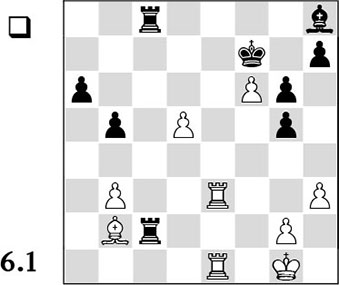
White has two beautiful passed pawns on f6 and d5, but it seems as if Black has managed to create counterplay just in time with …♖c2. How can White make quick progress nonetheless?
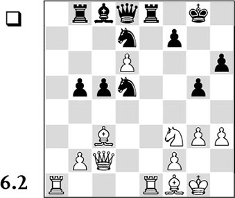
Which move is to be preferred? Make your choice:
A) 29.♖xe8+
B) 29.♘e5
C) 29.♕d2
D) 29.h4.
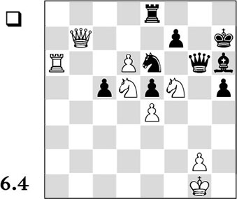
It is clear that the giant passed pawn on d6, in cooperation with the white pieces, should be able to force a quick decision. Remarkably enough, Black appears to have sufficient defensive resources after all. How can White escort the pawn to the other side in a creative way? Give a few variations to confirm your idea.